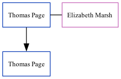

Thomas Page
[ Home ] | [ Calendar ] | [ Surnames Index ] | [ Family History ]Thomas Page was the 6 times great-grandfather of Nigel Horne and married Elizabeth Marsh (with whom he had 1 child, Thomas, ) at St Mary The Virgin, Lydden, Kent, England on Sep 2, 17221.
Children
- Thomas was born c. 22 Apr 1733
Citations
- England Marriages 1538-1973 - Findmypast
Media
England Marriages 1538-1973 - R_847856874
Kent marriages and banns - GBPRS/CANT/M/97204489/1
Kent marriages and banns - GBPRS/EASTKENT/MAR/189547/1
England Marriages 1538-1973 - R_847858970
Family Tree
Generated by ged2site. Last updated on Nov 13, 2024